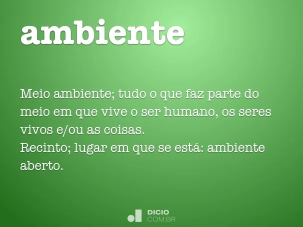

ambiente
Significado de Ambiente
substantivo masculino
Meio ambiente; tudo o que faz parte do meio em que vive o ser humano, os seres vivos e/ou as coisas.
Recinto; lugar em que se está: ambiente aberto.
Atmosfera; reunião do que envolve uma pessoa, sua situação financeira, cultural, psicológica e moral: ambiente pobre, alegre.
[Informática] Conjunto dos elementos através dos quais os programas são executados.
adjetivo
Que está ao redor, envolvendo pessoas ou coisas: música ambiente.
Etimologia (origem da palavra ambiente). Do latim ambiens.entis.
Sinônimos de Ambiente
Ambiente é sinônimo de: envolvente, recinto, atmosfera
Definição de Ambiente
Classe gramatical: adjetivo de dois gêneros e substantivo masculino
Flexão do verbo ambientar na: 1ª pessoa do singular do presente do subjuntivo, 3ª pessoa do singular do presente do subjuntivo, 3ª pessoa do singular do imperativo afirmativo, 3ª pessoa do singular do imperativo negativo
Separação silábica: am-bi-en-te
Plural: ambientes
Frases com a palavra ambiente
O que nós somos é o que fazemos, e o que fazemos é o que o ambiente nos faz fazer.
- Jonh Watson
Um homem de génio é produzido por um conjunto complexo de circunstâncias, começando pelas hereditárias, passando pelas do ambiente e acabando em episódios mínimos de sorte.
- Fernando Pessoa
Exemplos com a palavra ambiente
A pesquisa sobre o ambiente marciano em Troia se viu beneficiada também pelos ventos que sopraram sobre a região em abril e maio últimos e que limparam os painéis solares do Spirit e aumentaram sua provisão de energia.
Folha de S.Paulo, 26/06/2009
No entanto, longe de ser um inconveniente, o local onde o Spirit se encontra, batizado como "Troia" pela Nasa, é uma bênção para os cientistas, porque possibilita a reunião de boas informações sobre o ambiente do planeta, disse o JPL em comunicado.
Folha de S.Paulo, 26/06/2009
Em ambiente "clean", bem iluminado e confortável, oferece sugestões criativas que mudam a cada dia.
Folha de S.Paulo, 09/01/2010

Outras informações sobre a palavra
Possui 8 letras
Possui as vogais: a e i
Possui as consoantes: b m n t
A palavra escrita ao contrário: etneibma
Rimas com ambiente